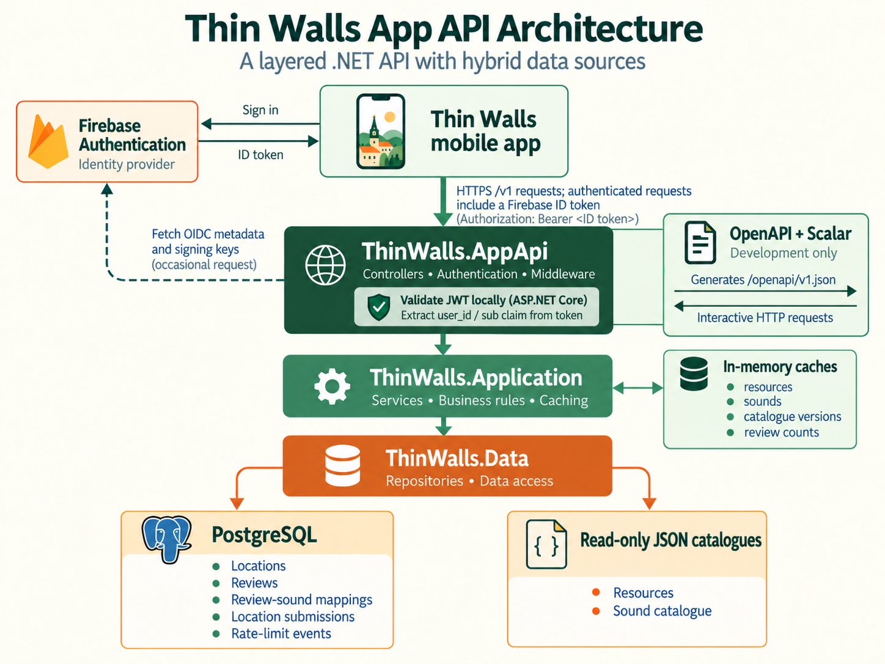
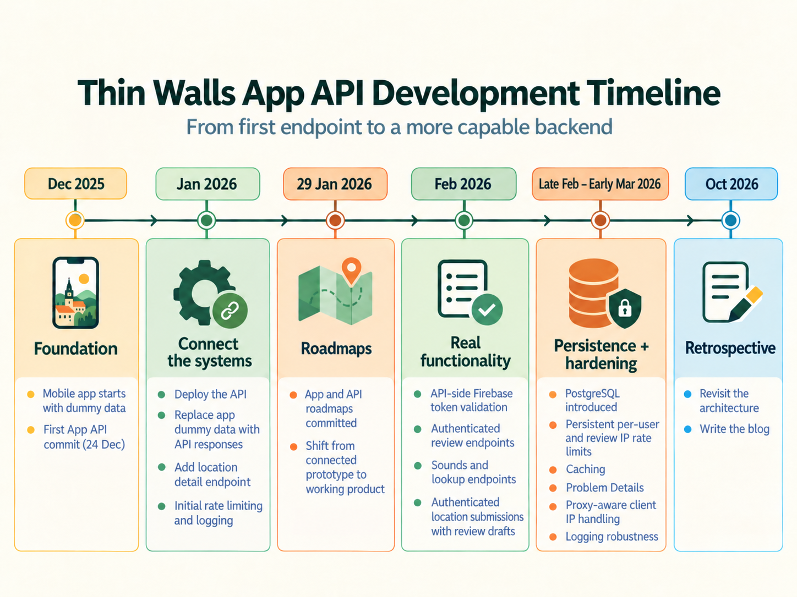
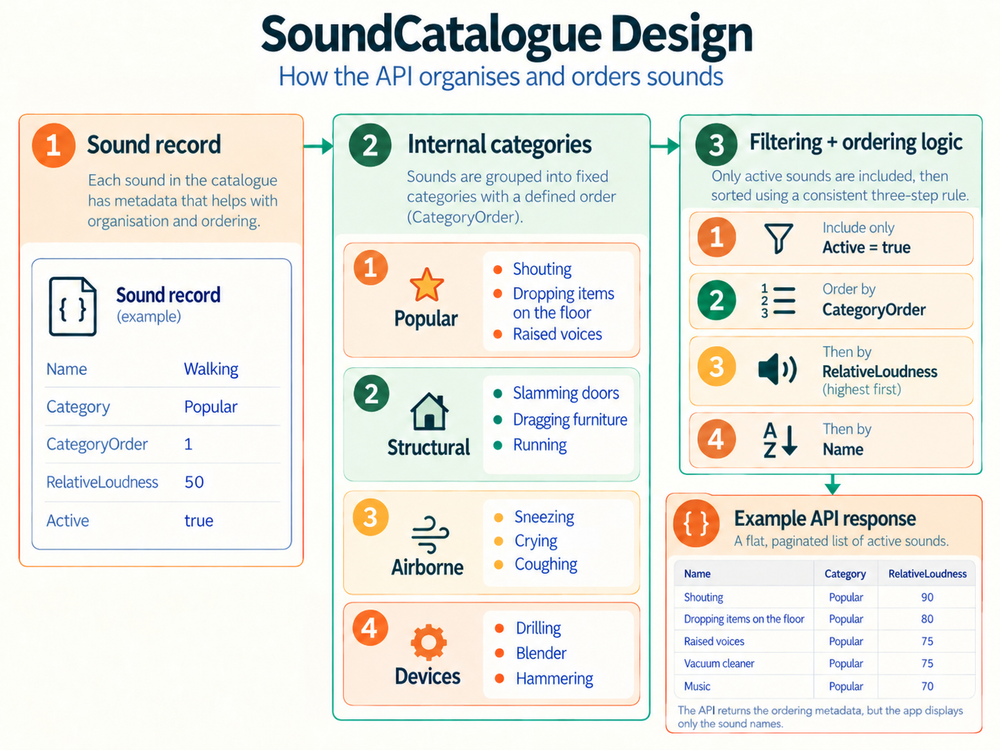

I started developing the Thin Walls mobile app on 19 December 2025. It was my first React Native application, although I already had several years of experience building .NET Web APIs.
I began with the app, using dummy data to develop the screens and understand what the backend would need to provide.
On 24 December, I made the first commit to the Thin Walls App API.
Starting small
I built the API using .NET 10 and ASP.NET Core, with three layers:
-
ThinWalls.AppApifor controllers, authentication and HTTP concerns. -
ThinWalls.Applicationfor services and business logic. -
ThinWalls.Datafor repositories and data access.
I wanted separation of concerns from the beginning, so I could introduce new endpoints and functionality without having to continually reorganise the solution.
The first endpoint was
GET /v1/resources.
Initially, I used hardcoded data, followed by JSON-backed datasets. This kept infrastructure costs down and gave me time to refine the data models as I learnt more about what the mobile app needed.

Connecting the app and API
On 13 January 2026, I used Codex to review the API codebase. I like using a more recent model when reviewing code because it can provide more accurate and relevant feedback.
The following day, I deployed the API and merged the first mobile-app pull request replacing dummy resource data with API responses.
Over the next two weeks, I continued integrating endpoints, working on the app's branding and implementing Firebase authentication.
By late January, the project was becoming more complex.
As the only human developer, I needed a clearer view of the work ahead. On 29 January, I committed separate project roadmaps to the mobile app and API repositories.
The focus shifted from getting the two systems communicating to completing the features that would make Thin Walls functional.
I used ChatGPT to discuss requirements and prepare scoped implementation prompts, Codex to implement changes, and project-status files to track progress.
Keeping tasks small and objectives clear helped me maintain momentum across both repositories.

Building out the functionality
February was a busy development month.
I added API-side Firebase token validation and authenticated endpoints for creating, editing and viewing reviews.
One important design decision was keeping reviews anonymous in the public interface while associating them with authenticated users internally.
I want people to feel comfortable sharing their sound experiences without having their names publicly attached to their reviews. Internally, the API still needs user identity for ownership, rate limiting and moderation.
On 24–25 February, I added an authenticated location-submission flow, allowing signed-in users to submit new locations alongside review drafts. This extended the API beyond browsing and reviewing existing locations to supporting contributions from users.
Designing the SoundCatalogue
Another decision I'm particularly happy with is the
SoundCatalogue.
Rather than using star ratings or decibel measurements, Thin Walls lets people select sounds they've experienced at a location.
The catalogue has four internal categories: Popular, Structural, Airborne and Devices.
Sounds are ordered by category, then by descending relative loudness, and finally alphabetically.
.OrderBy(sound => sound.CategoryOrder)
.ThenByDescending(sound => sound.RelativeLoudness)
.ThenBy(sound => sound.Name)
The categories and relative-loudness values aren't displayed to users, although they are included in the API response. They provide a consistent ordering for the mobile app to consume.
I like that a data-modelling decision can support a straightforward user experience without adding complexity to the interface.

Moving to PostgreSQL
Towards the end of February, I moved the API's relational data to PostgreSQL using Dapper and Npgsql.
Locations, reviews and related user-generated data moved to PostgreSQL, while the curated Resources and SoundCatalogue datasets remained in JSON.
Because I had established repository interfaces early, I could change the underlying data access implementations while preserving the API contracts used by the mobile app.
I'm glad I started with JSON. It was a practical way to develop and refine the data models before introducing database persistence.
Strengthening the backend
During the first week of March, I focused on improving the API's reliability and consistency.
This included rate limiting, caching, standardised error responses, proxy handling and logging improvements.
For example, review counts are derived from eligible reviews rather than relying on a manually maintained count. Caching and invalidation help keep those calculations efficient.
By 6 March 2026, the API had grown considerably from its original single endpoint.
Looking back
Returning to the project in October 2026, I revisited the Git history, roadmaps, project-status files and implementation prompts to reconstruct how the API had evolved.
There are several decisions I'm happy with: starting with the app to understand its requirements, choosing a layered architecture, introducing PostgreSQL when it was needed, and keeping development organised through small tasks and clear documentation.
Working with ChatGPT and Codex supported that process, but the most valuable part was having a clear understanding of what I wanted to build before each implementation step.
Looking back, I'm happy with how the Thin Walls App API has taken shape.
That's it for this blog. See you next time.
Happy building,
Margaret